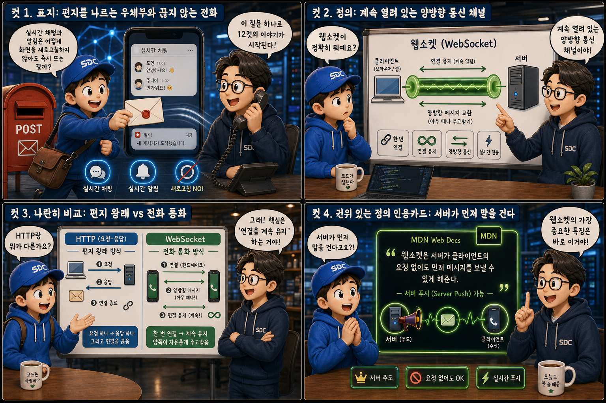
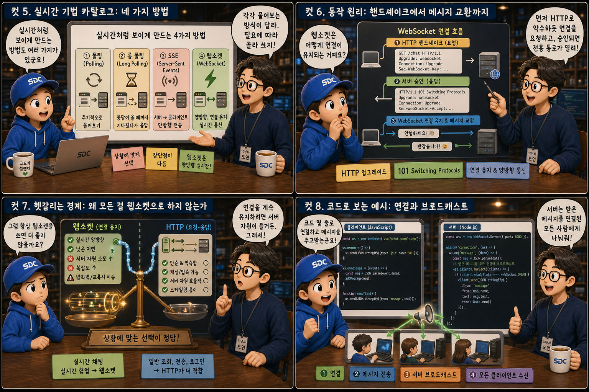
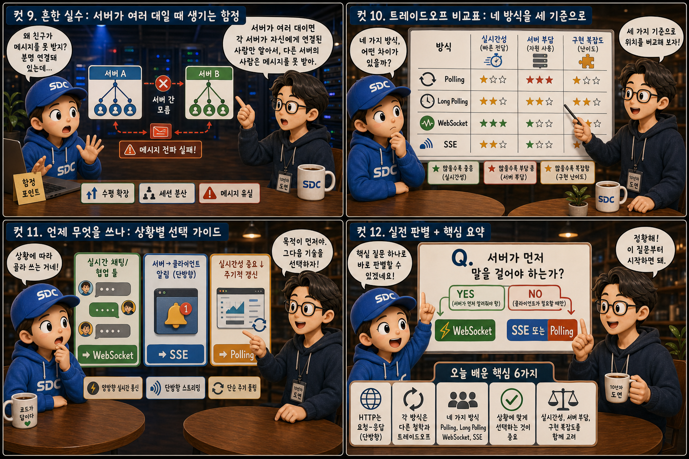

편지를 나르는 우체부와 끊지 않는 전화 통화에 비유해, HTTP와 웹소켓이 대화를 이어가는 방식의 차이를 12컷으로 풀어봅니다.
HTTPvsWebSocket
채팅 앱을 켜두면 상대방이 보낸 메시지가 화면을 새로고침하지 않아도 즉시 나타난다. 알림도 마찬가지다. 분명 내가 아무것도 요청하지 않았는데, 서버는 어떻게 먼저 정보를 보내줄 수 있는 걸까. 그 답의 중심에 웹소켓(WebSocket)이 있다. 이 글은 그 원리를 편지 왕래와 전화 통화라는 익숙한 비유로 하나씩 따라가 본다. 편지를 들고 우체국과 집 사이를 매번 왕복하는 우체부가 HTTP라면, 수화기를 든 채 끊지 않고 계속 이어가는 통화는 웹소켓이다.
PART 1 / 3 — 웹소켓이란 무엇인가 (컷 01–04)

fourcut-01 — 컷 01 ~ 04
컷 01
실시간 채팅은 어떻게 새로고침 없이 뜨는 걸까
실시간 채팅과 알림은 어떻게 화면을 새로고침하지 않아도 즉시 뜨는 걸까 — 이 질문 하나로 이야기가 시작된다.
화면 하나를 반으로 가르면 두 개의 풍경이 나타납니다. 왼쪽에는 편지 봉투를 들고 집과 우체국 사이를 쉼 없이 오가는 우체부, 발밑에는 수없이 오간 발자국이 겹쳐 있습니다. 오른쪽에는 수화기를 든 두 사람이 전화를 끊지 않은 채 계속 마주 보고 이야기를 나눕니다. 두 사람 사이의 전화선은 끊어지지 않고 빛나며, 그 위로 말풍선이 양방향으로 오갑니다. 반복해서 왕복하는 우체부가 HTTP이고, 끊지 않는 통화가 웹소켓입니다. 이 두 풍경의 차이를 따라가면 실시간 통신의 원리가 보입니다.
컷 02
정의부터 명확히: 계속 열려 있는 양방향 통신
웹소켓은 클라이언트와 서버가 한 번 연결을 맺으면, 그 연결을 끊지 않고 계속 유지하면서 양쪽 모두가 아무 때나 메시지를 주고받을 수 있는 통신 방식이다.
웹소켓(WebSocket)은 클라이언트와 서버 사이에 한 번 연결을 맺으면 그 연결이 계속 유지되는 통신 프로토콜입니다. 연결이 살아있는 동안에는 클라이언트든 서버든 원하는 시점에 아무 때나 메시지를 보낼 수 있습니다. 이는 요청을 보내야만 응답을 받을 수 있는 기존 HTTP 방식과 근본적으로 다른 점입니다. 자물쇠를 열어 둔 채 회선을 계속 켜 두는 셈이고, 그 회선 위로 전류처럼 메시지가 양방향으로 흐릅니다. ws:// / wss://
컷 03
나란히 비교: 편지 왕래 vs 전화 통화
HTTP는 요청 하나에 응답 하나를 주고 연결을 끊는 편지 왕래 방식이고, 웹소켓은 한 번 연결하면 계속 이어지는 전화 통화 방식이다.
HTTP
요청 → 응답 → 연결 종료, 매번 반복
WEBSOCKET
한 번 연결 → 계속 유지 → 아무 때나 대화
letters vs phone call
HTTP 통신은 클라이언트가 요청을 보내고 서버가 응답을 하면 그 즉시 연결이 끊어지는 구조입니다. 새로운 정보가 필요하면 다시 처음부터 요청을 보내야 합니다. 반면 웹소켓은 최초 연결이 성립된 이후에는 그 연결을 계속 유지하면서, 마치 전화 통화처럼 필요할 때마다 즉시 대화를 주고받습니다. 우체부가 문을 두드리고 답장을 받은 뒤 문이 닫히는 장면과, 수화기를 든 두 사람이 문을 열어 둔 채 계속 앉아 있는 장면의 차이입니다.
컷 04
한 문장으로 정리하면: 서버가 먼저 말을 건다
웹소켓의 가장 중요한 특징은 서버가 클라이언트의 요청 없이도 먼저 메시지를 보낼 수 있다는 점, 즉 서버 푸시(server push)가 가능하다는 것이다.
웹소켓을 이해하는 데 가장 중요한 한 문장은 이것입니다. “서버가 클라이언트의 요청 없이도 먼저 메시지를 보낼 수 있다.” 이것을 서버 푸시라고 부릅니다. 아무 버튼도 누르지 않은 클라이언트에게 서버가 스스로 말풍선을 던지는 장면을 떠올려 보세요. 실시간 채팅에서 상대방이 보낸 메시지가 내 화면에 즉시 나타나는 것, 알림이 새로고침 없이 뜨는 것이 모두 이 성질 덕분에 가능합니다. server push, 요청(request) 없이 이루어지는 push라는 뜻입니다.
PART 2 / 3 — 동작 원리와 대안 기술 (컷 05–08)

fourcut-02 — 컷 05 ~ 08
컷 05
실시간 기법 카탈로그: 네 가지 방법
실시간처럼 보이게 만드는 방법은 웹소켓 말고도 여러 가지가 있으며, 각각 물어보는 방식이 다르다.
실시간처럼 느껴지게 만드는 기법에는 여러 층위가 있습니다. Polling은 클라이언트가 몇 초마다 서버에게 새 소식이 있는지 반복해서 물어보는 방식이고, Long Polling은 서버가 새 소식이 생길 때까지 응답을 잠시 미뤄두는 방식입니다. WebSocket은 연결 자체를 계속 열어두고, SSE(Server-Sent Events)는 서버에서 클라이언트로만 한 방향으로 정보를 계속 흘려보냅니다. 우체부가 같은 집 문을 매 시간 두드리는 것이 Polling, 답장이 나올 때까지 문 앞에서 기다리는 것이 Long Polling이라면, 웹소켓은 이 중에서 가장 완전한 양방향 실시간 통신을 제공합니다.
컷 06
동작 원리: 핸드셰이크에서 메시지 교환까지
웹소켓은 먼저 HTTP로 악수하듯 연결을 요청한 뒤, 승인이 되면 그 연결이 계속 유지되는 전용 통로로 전환된다.
핸드셰이크 요청→Upgrade: websocket→핸드셰이크 승인→101 Switching Protocols→연결 유지↔메시지 교환
웹소켓 연결은 먼저 일반 HTTP 요청으로 시작합니다. 클라이언트가 이 연결을 웹소켓으로 바꿔달라는 Upgrade 요청을 보내면, 서버가 이를 승인하면서 101 Switching Protocols 응답을 돌려줍니다. 이 악수가 끝나면 그 연결은 더 이상 매번 끊어지는 HTTP가 아니라 계속 열려있는 전용 통로가 되고, 그 위에서 양쪽이 자유롭게 메시지를 주고받습니다. 한 번 악수하면 그다음부터는 계속 대화가 이어지는 셈입니다.
컷 07
헷갈리는 경계: 왜 모든 걸 웹소켓으로 하지 않는가
연결을 계속 유지하는 데는 서버 자원이 들기 때문에, 대부분의 평범한 요청-응답에는 여전히 HTTP가 더 단순하고 적합하다.
웹소켓 연결은 맺어져 있는 동안 서버 쪽에서 메모리와 네트워크 자원을 계속 점유합니다. 사용자가 많아질수록 유지해야 할 연결 수도 늘어나기 때문에 아무 데나 웹소켓을 쓰면 서버 부담이 커집니다. 저울 한쪽에 수화기 더미를 올리면 서버랙이 낑낑대며 무게를 버티지만, 반대쪽에 편지 봉투 더미를 올리면 서버랙은 가볍게 웃습니다. 상품 목록을 보거나 검색을 하는 것처럼 한 번 요청하고 한 번 응답받으면 끝나는 작업에는 연결을 계속 유지할 필요가 없는 HTTP가 더 단순하고 효율적입니다. 연결 유지 = 자원 소모
컷 08
코드로 보는 예시: 연결과 브로드캐스트
클라이언트는 몇 줄의 코드로 서버에 전화를 걸듯 연결하고, 서버는 받은 메시지를 연결된 모든 사람에게 나눠준다.
클라이언트 — 연결 열기
// 서버에 전화를 걸듯 연결한다const socket = new WebSocket("wss://chat.example.com");
socket.onmessage = (e) => {
render(e.data); // 받은 메시지 화면에 표시
};
서버 — 전체에 브로드캐스트
// 새 연결을 등록하고 메시지를 나눠준다
wss.on("connection", (socket) => {
clients.add(socket);
socket.on("message", (msg) => {
clients.forEach(c => c.send(msg)); // 전체 전달
});
});
브라우저에서는 new WebSocket(url) 한 줄로 서버에 연결을 열 수 있고, onmessage 핸들러로 서버가 보내는 메시지를 받습니다. 서버는 새 연결이 들어올 때마다 그 소켓을 목록에 등록해두고, 누군가 메시지를 보내면 등록된 모든 소켓에게 그 메시지를 전달하는 브로드캐스트를 수행합니다. 채팅방에서 한 사람이 보낸 메시지가 다른 모든 참여자 화면에 동시에 뜨는 원리가 바로 이 브로드캐스트입니다.
PART 3 / 3 — 실전 함정과 선택 기준 (컷 09–12)

fourcut-03 — 컷 09 ~ 12
컷 09
흔한 실수: 서버가 여러 대일 때 생기는 함정
서버가 여러 대로 늘어나면 각 서버가 자신에게 연결된 사람만 알기 때문에, 다른 서버에 붙은 사람은 메시지를 못 받는 문제가 생긴다.
⚠ 다중 서버 팬아웃 누락 · 재연결 처리 누락
서버를 한 대만 쓸 때는 문제가 없지만, 트래픽이 늘어 서버를 여러 대로 늘리면 각 서버는 자신에게 연결된 사용자만 알고 있다는 함정에 빠지기 쉽습니다. 서버 A에 접속한 사용자가 보낸 메시지가 서버 B에 접속한 사용자에게 전달되지 않는 것입니다. 여기에 더해, 네트워크가 잠깐 끊겼을 때 자동으로 재연결하는 로직을 빠뜨리는 것도 매우 흔한 실수입니다 — 전화선이 툭 끊긴 채 방치된 수화기처럼요.
✓ pub/sub 브로커로 서버 간 중계 + 재연결 로직
이 문제는 Redis 같은 pub/sub 브로커를 두어 서버들끼리 메시지를 중계하게 함으로써 해결합니다. 서버 A가 받은 메시지를 브로커에 발행하면, 브로커가 서버 B에도 그 메시지를 전달해 서버 B에 연결된 사용자도 놓치지 않고 받아볼 수 있습니다.
컷 10
트레이드오프 비교표: 네 방식을 세 기준으로
Polling, Long Polling, WebSocket, SSE는 실시간성과 서버 부담, 구현 복잡도에서 서로 다른 위치에 놓인다.
real-time technique trade-offs
방식
실시간성
서버 부담
구현 복잡도
Polling
낮음 (★☆☆)
낮음
낮음
Long Polling
중간 (★★☆)
중간
중간
WebSocket
높음 (★★★)
높음
높음
SSE
중상 (★★☆)
중간
낮음
네 가지 방식은 실시간성, 서버 부담, 구현 복잡도라는 세 축에서 뚜렷한 트레이드오프를 보입니다. 폴링은 구현이 가장 쉽지만 실시간성이 떨어지고, 웹소켓은 가장 즉각적이지만 연결을 유지하는 만큼 서버 부담과 구현 복잡도가 큽니다. SSE는 서버에서 클라이언트로만 정보가 흐르면 되는 상황에서 웹소켓보다 단순하게 준수한 실시간성을 낼 수 있는 좋은 절충안입니다.
컷 11
언제 무엇을 쓰나: 상황별 선택 가이드
실시간 채팅이나 협업 툴에는 웹소켓, 서버에서 알림만 보내면 SSE, 실시간성이 크게 중요하지 않으면 Polling을 쓴다.
기술 선택은 상황에 달려 있습니다. 채팅방이나 여러 사람이 동시에 문서를 편집하는 협업 툴처럼 서버와 클라이언트가 쉴 새 없이 서로 말을 걸어야 한다면 웹소켓이 적합합니다. 서버가 클라이언트에게 알림만 보내면 되는 경우에는 더 가벼운 SSE로 충분합니다. 몇 초 정도의 지연이 문제 되지 않는 기능이라면 굳이 상시 연결 없이 Polling만으로도 충분한 경우가 많습니다. 실시간 요구가 강할수록 웹소켓 쪽으로, 약할수록 HTTP 쪽으로 저울추가 기운다고 생각하면 됩니다.
컷 12
실전 판별법과 핵심 요약
“서버가 먼저 말을 걸어야 하는가”라는 질문 하나로 웹소켓이 필요한지 판별할 수 있다.
웹소켓이 필요한지 판별하는 가장 실용적인 질문은 하나입니다. 서버가 클라이언트의 요청 없이 먼저 말을 걸어야 하는가. 그렇다면 웹소켓이나 SSE 같은 실시간 기술이 필요하고, 그렇지 않다면 익숙한 HTTP 요청-응답으로 충분합니다. 웹소켓은 한 번 연결하면 계속 열려 있고, 서버 푸시가 가능하며, 그 대가로 연결 유지 비용과 다중 서버 환경에서의 메시지 중계 문제를 함께 짊어져야 한다는 점을 기억하면 됩니다.
한 번 연결, 계속 열림서버 푸시 가능HTTP는 매번 끊김Polling/Long Polling/SSE도 대안연결 유지 = 자원 비용다중 서버엔 pub/sub 필요
하나의 연결, 계속 이어지는 대화
HTTP는 필요할 때마다 편지를 주고받고 끊는 방식이고, 웹소켓은 한 번 연결하면 계속 열어둔 채 아무 때나 말을 건넵니다. 그 대가로 서버는 연결을 유지하는 비용을 치러야 하지만, 실시간 채팅과 알림이 즉시 뜨는 마법은 바로 이 열린 회선 위에서 벌어집니다.